Analyzing Load Test Logs
2018-09-05
analyzing-load-test-logs.RmdLog output
There are a few types of log files generated by a shinycannon recording session.
-
./recording.log- Copy of the original recording used
- The file is comprised of JSON lines that capture all of the HTTP(s) and SockJS traffic that occurred during the recording
-
./detail.log- Log output to help debug errors
-
./sessions/*.csv- Collection of files for each session number, simulated user id, and user session
- One file is generated for each simulated session
- The file name format displays
SESSION_USER_USERSESSION.csv - Lines starting with
#should be ignored when processing
These outputs are combined when creating tidy shinyloadtest data.
Tidy Data
shinycannon recording sessions can be loaded into R using the load_runs function.
df <- shinyloadtest::load_runs(
`Run 1` = "./PATH/TO/RUN_1",
`Run 2` = "./PATH/TO/RUN_2",
`Run 3` = "./PATH/TO/RUN_3"
)The shinyloadtest::load_runs function uses these files to generate a data frame with load test results. The resulting data frame contains the following columns:
-
run- The name of the recording session. This would be
Run 1in the example above.
- The name of the recording session. This would be
-
session_id- An incrementing integer value for every session within a
run. Starts at 0.
- An incrementing integer value for every session within a
-
user_id- Which simulated user is performing the work within a
run. Starts at 0.
- Which simulated user is performing the work within a
-
iteration- An incrementing integer value of the session iteration for the matching
user_id. Starts at 0.
- An incrementing integer value of the session iteration for the matching
-
input_line_number- The line number corresponding to the event in the
recording.logfile.
- The line number corresponding to the event in the
-
event- The web event being performed. Could be one of the following:
-
REQ_HOME- The initial HTTP request for the application to load the Homepage -
REQ_GET- Request a supporting file (JavaScript / CSS) -
REQ_TOK- Request a Shiny token -
REQ_SINF- Request SockJS information -
REQ_POST- Perform a POST query, such as uploading part of a file -
WS_RECV_BEGIN_UPLOAD- A file upload is being requested -
WS_OPEN- Open a new SockJS connection -
WS_RECV_INIT- Initialize a new SockJS -
WS_SEND- Send information from the Shiny server to the browser -
WS_RECV- Send information from the browser to the Shiny server -
WS_CLOSE- Close the SockJS connection
-
- The web event being performed. Could be one of the following:
-
start- Start time of the event relative to the beginning of the
run’s maintenance period
- Start time of the event relative to the beginning of the
-
end- End time of the event relative to the beginning of the
run’s maintenance period
- End time of the event relative to the beginning of the
-
time- Total elapsed time of the event
-
concurrency- A number of events that are being processed concurrently
-
maintenance- A boolean determining whether or not all simulated users are executing a session
-
label- A human readable event name
-
json- The parsed JSON provided in the
recording.logfile. If the fieldmessageexists, amessage_parsedfield is added containing a parsed form of the SockJS’s JSON message content.
- The parsed JSON provided in the
Normally, users will not need to worry about specific files, but should be able to use the tidy data frame for further analysis.
They key idea is that each row of the tidy results data frame represents an event. Events include the initial page load, user inputs and their associated outputs, and user wait times. You’ll want to compare the duration of event times across different load tests.
Website Anatomy
Websites are comprised of two main parts:
- Main HTML document
- Supporting files, such as images, CSS files (webpage style), and JavaScript files (page interactivity).
The main HTML document must be processed to determine which supporting files to retrieve. This is why you will always see the first event as Requesting the Homepage. Many (~ 10) of the following events will be to request specific CSS or JavaScript files. After loading the CSS files, the browser will then style the webpage.
Once the JavaScript files have finished loading, communication to a data server can begin. For Shiny applications, this involves communicating using SockJS. SockJS is a single, constant line of communication between the Shiny server and the Shiny application in the browser. SockJS will notify the Shiny server about which input values have changed by a user and will also notify the Shiny application about which outputs need to been updated. This communication process will continue until SockJS is closed, typically the last line of the recording.log file.
As an example, the basic 01_hello gallery shiny app loads the homepage, loads more than 20 supporting CSS and JavaScript files, and finally begins SockJS communication with the supporting Shiny server.
Report Output
The data provided by shinyloadtest::load_runs can be used to directly create a stand alone HTML report. This report contains six major sections of diagnostic information.
df <- shinyloadtest::load_runs(
"1 user" = "./demo1",
"4 users" = "./demo4",
"16 users" = "./demo16"
)
shinyloadtest::shinyloadtest_report(df, "report.html")Sessions
The Sessions tab of the shinyloadtest report displays each simulated session performed by each user. Each run displays their respective gantt chart by clicking on the named buttons near the top of the webpage.
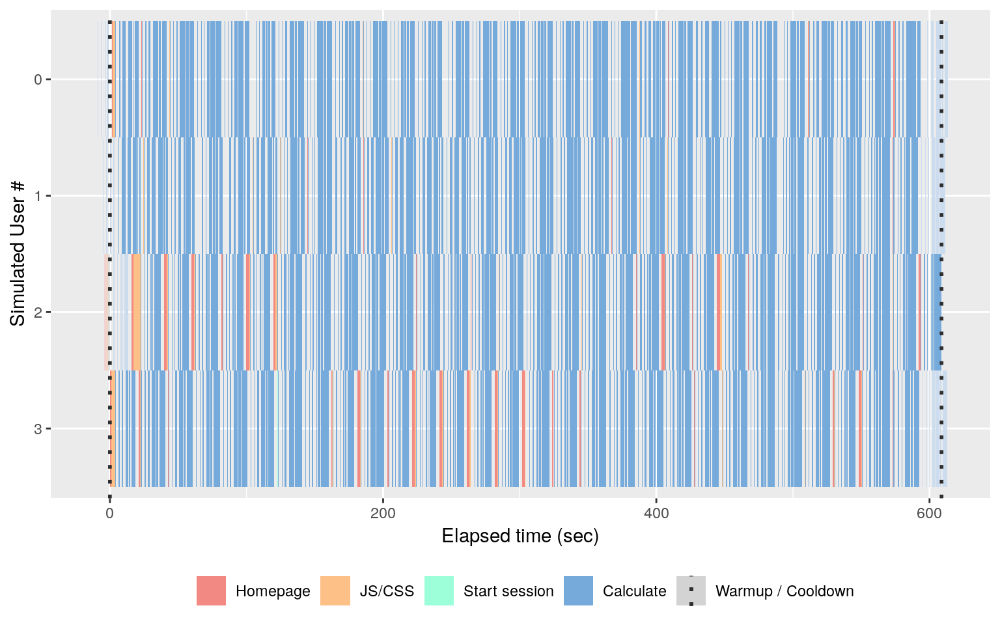
Maintenance period: During a load test, user sessions are not all started at exactly the same time. Instead, user requests are staggered over a warmup period. Once the targeted number of concurrent sessions is reached, the maintenance period begins during which time shinycannon maintains the number of user sessions. After the desired test duration is reached, user sessions begin ending during a cooldown period. Sessions that are desaturated in color occurred during the warmup or cooldown. The maintenance period is marked with vertical dotted lines spanning every simulated user.
In the example above, four users were stagger started and simulated for 10 minutes. The majority of the time is spent calculating new values for the outputs in the recording. The session gantt chart below displays the same recording but with sixteen users.
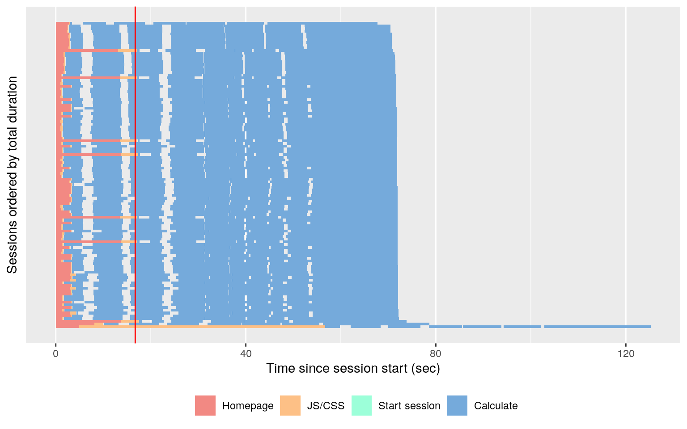
Both runs were executed against a Shiny application supported by a single process. With very high resource contention, a larger proportion of time was spent calculating in the 16 users run.
Session Duration
The Session Duration tab displays all maintenance period sessions ordered by total duration vertically from fastest to slowest.
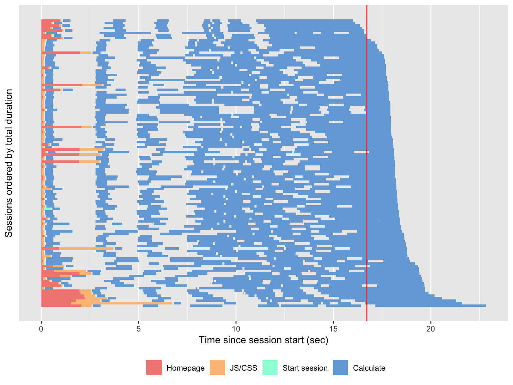
Ideally, most of the sessions should be completed in about the same amount of time as the recording.log execution time. The vertical red line line defaults to the recording.log duration, but can be set when calling shinyloadtest_report(df, duration_cutoff = 10). In the example above, most sessions finish around the same amount of time as the recording.log duration.
It is good to have to have each session duration (row) look like the next. If certain rows are much wider than the others, server resource contention might be occurring. Looking at the 16 user run, the same recording is on average 4x slower than the recording.log duration with one session taking twice as long as the average 16 user session.
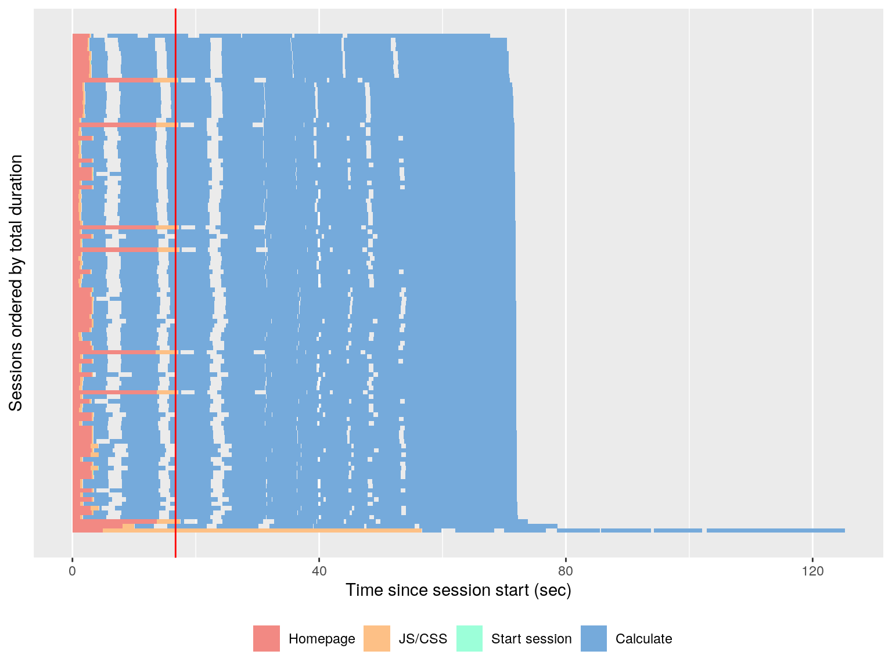
Event Waterfall
The Event Waterfall tab displays an event waterfall of each recording session. In an ideal world with no calculation time, all lines would be vertical. In a practical world, all of the lines should be parallel to each other. This would mean that the calculation times are consistent and are not behaving erratically.
Looking at the 4 user run below, the lines are fairly uniform in shape and are mostly parallel to each other.
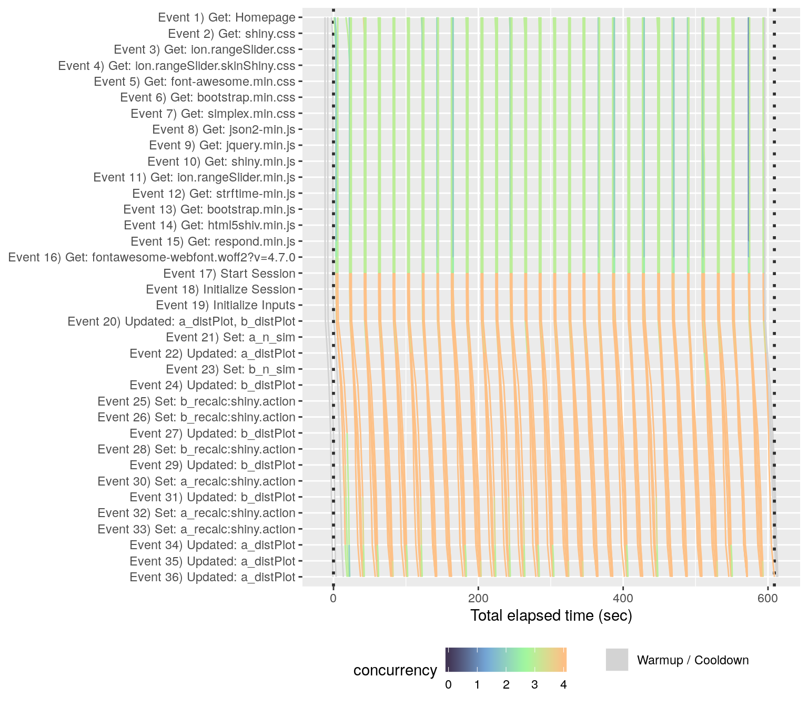
If we look at another run where a file was uploaded and many POST requests were made for a DT table, there are many horizontal lines that are not parallel to each other. This happens when execution for that step took much more time than the other sessions. The lines that jut horizontally indicate erratic behavior.
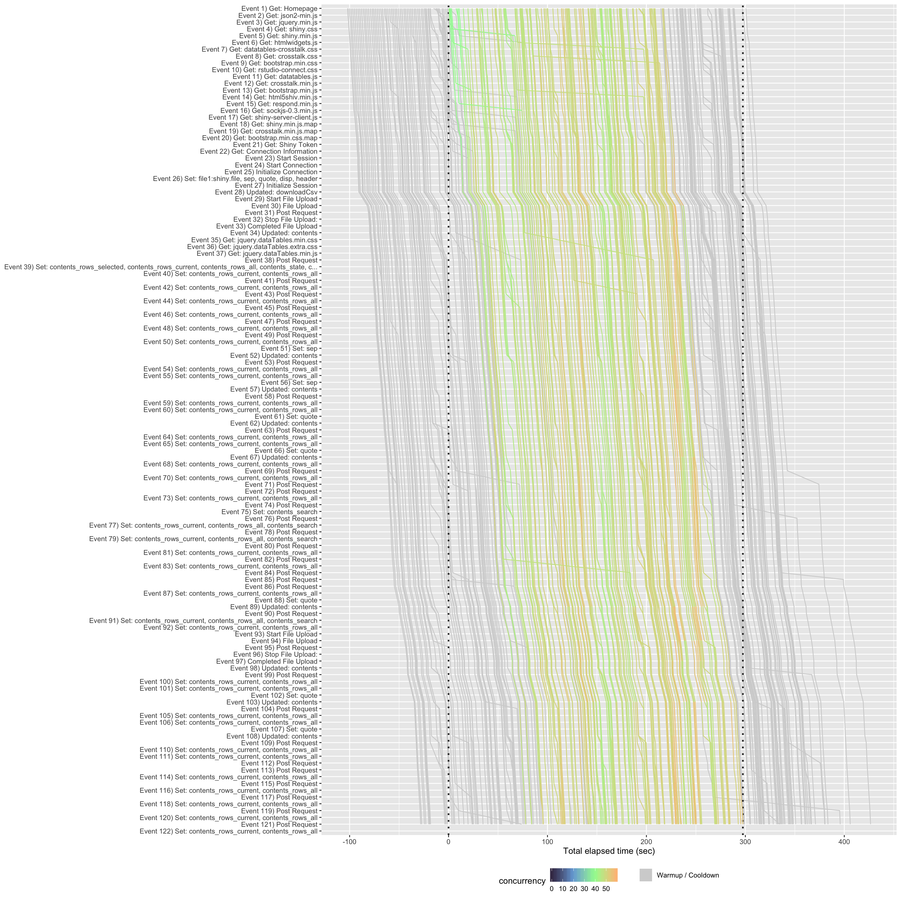
Latency
The Latency tab displays two plots. The first plot displays the total HTTP time for each session. The second plot displays the maximum calculation time. Both plots display a cutoff value that can be set when calling shinyloadtest_report(df, http_latency_cutoff = 5, max_websocket_cutoff = 20). Similar to the Sessions tab, sessions that are desaturated in color are sessions that started before (warmup) or ended after (cooldown) the maintenance period.
The total HTTP latency plot helps to diagnose how long a user has to wait before a website has appeared on their browser. Ideally, this should be no time at all, as the server is just providing static files.

The maximum SockJS latency plot helps to diagnose the maximum amount of time a user has to wait before an input is updated or output is recalculated. Ideally, this should be shorter than our attention spans.
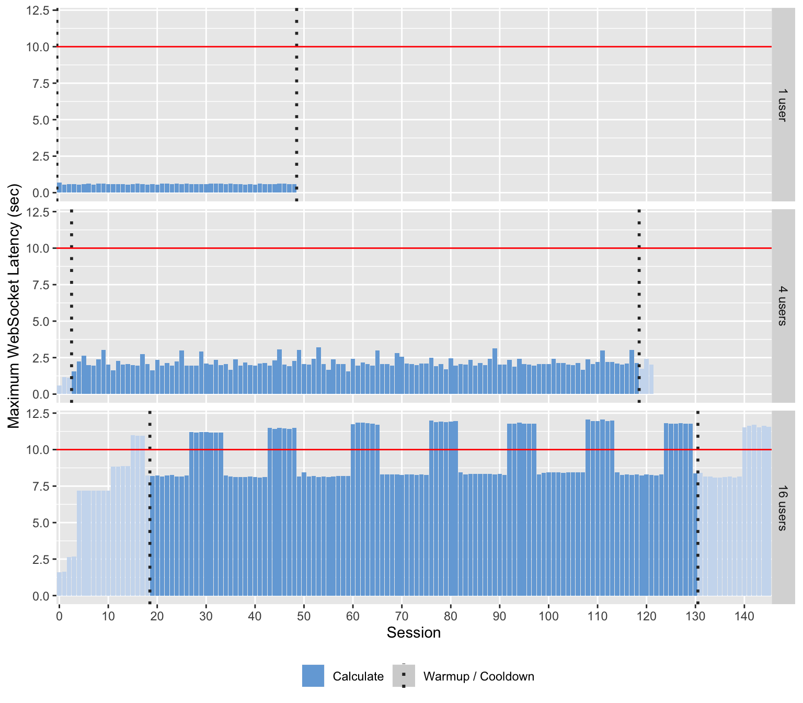
In the example above, the 16 users run has a very strong pattern in it’s maximum calculation time. Knowing that the 16 users run has the same recording as the 1 user and 4 users runs, it would appear that the 16 users server is under too much load as the same calculations should be computed within 1 second (as in the 1 user run).
Event Duration
The Event Duration tab has three to four tabs available to choose from:
- Slowest max time - Event plots are arranged by the slowest maximum time within each plot
- Slowest min time - Event plots are arranged by the slowest minimum time within each plot
- Largest mean difference - Event plots are arranged by the largest difference in the run’s mean event time. This option is available if more than one run is being displayed.
- Data table - A tabular display of the slowest max time, slowest min time, and (possibly) largest mean difference
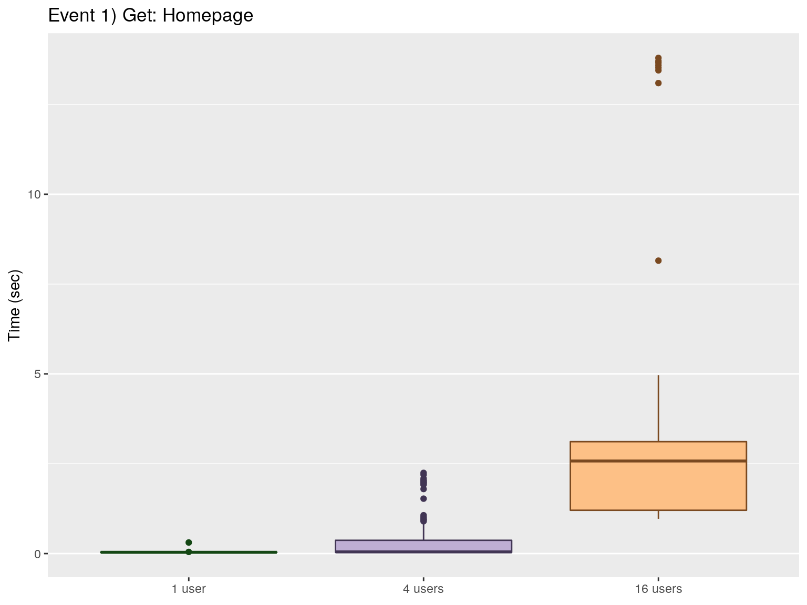
Ideally, the boxplots should not differ for any event and are close to 0 seconds elapsed. As resource contention goes up, event time might go up. Hopefully, there are no extreme outliers above the center mass of the boxplot as shown below.
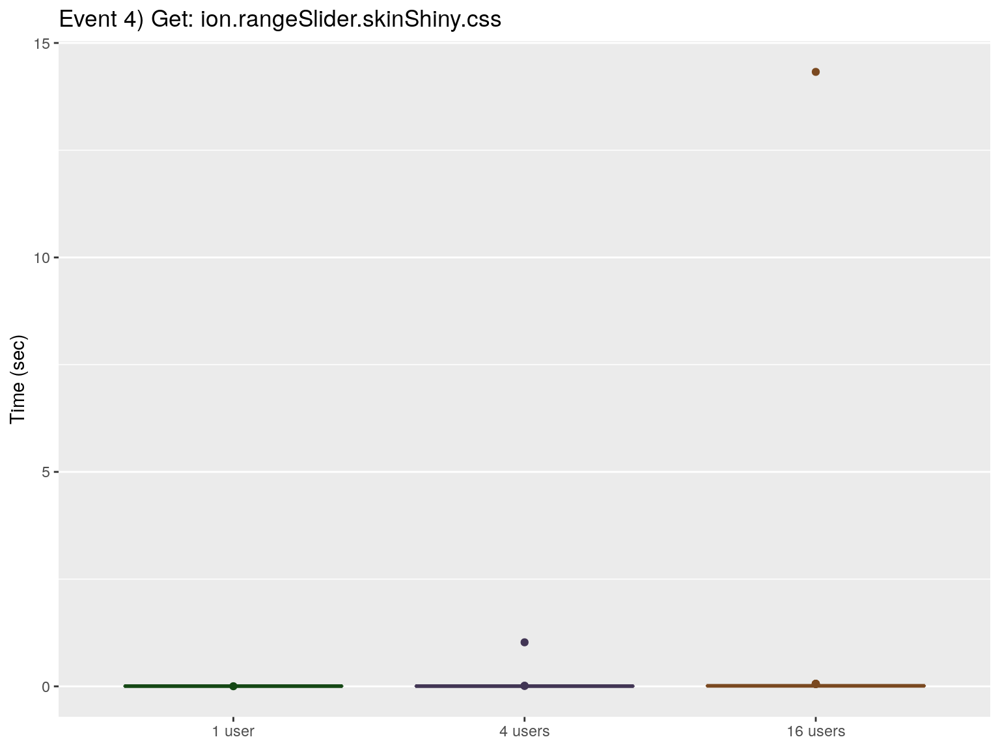
Event Concurrency
The Event Concurrency tab has four tabs available to choose from:
- Largest slope - Event plots are arranged by the largest slope magnitude found when fitting a line to each run
- Largest intercept - Event plots are arranged by the largest intercept magnitude found when fitting a line to each run
- Largest error - Event plots are arranged by the largest error magnitude found when fitting a line to each run
- Data table - A tabular display of the raw slope, raw intercept, and raw error values
Ideally, we want a flat linear model with no slope. This means that the calculations of our shiny application will scale as user concurrency goes up.
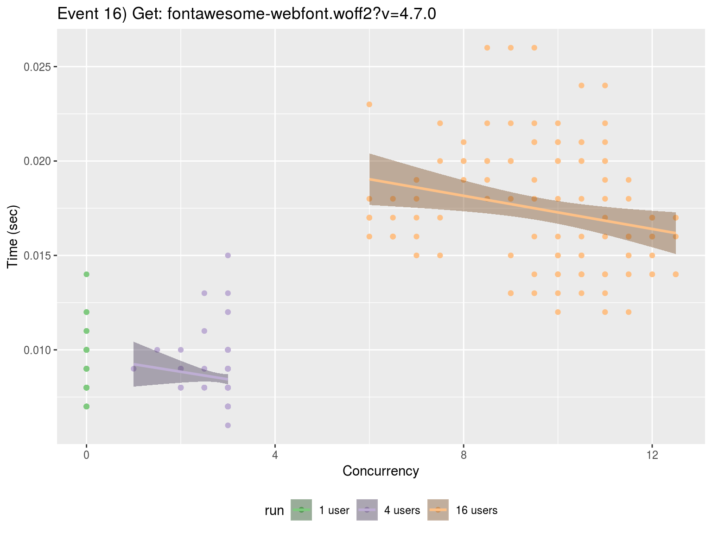
However, if a strong linear trend exists as concurrency is increased, users will be waiting longer as more users are accessing the shiny application.
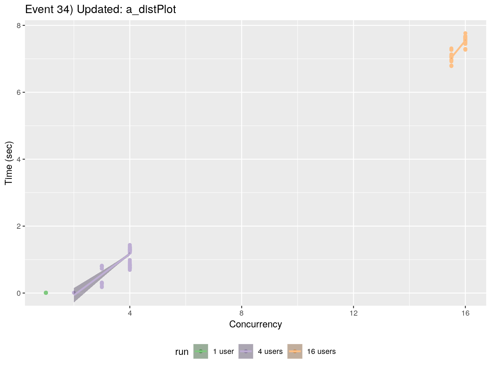